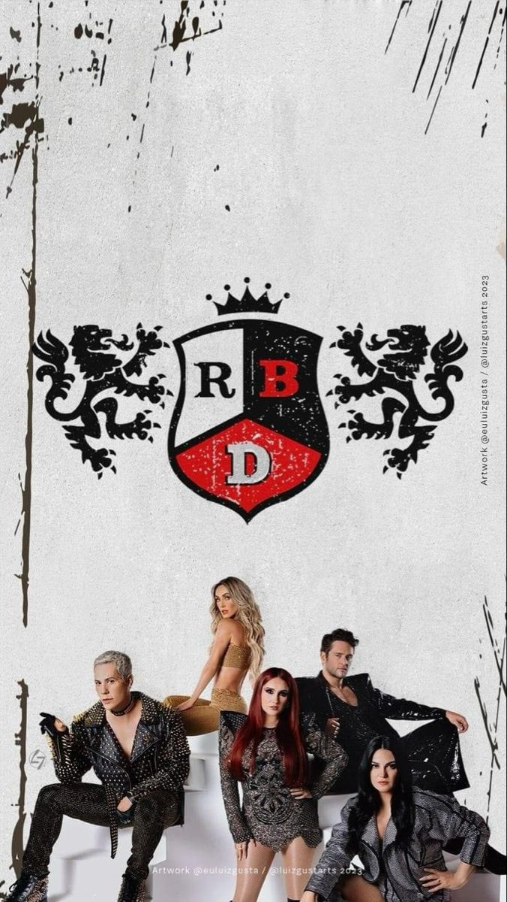

RBD é um grupo vocal mexicano de música pop,criado a partir da novela mexicana REBELDE
o grupo é composto originalmente por Afonso Herrera,Anahí,Christian Chávez,Chirstopher Von Uckermann,Dulce Maria e Maite Perroni
Em 19 de dezembro de 2022, todos os integrantes – com exceção de Alfonso Herrera – fizeram um blackout em suas redes sociais, onde anunciaram que em 19 de janeiro de 2023 seria realizado um comunicado.
Fãs de cidades como Los Angeles, Nova Iorque, Texas, Chicago, São Paulo, Rio de Janeiro e Cidade do México se reuniram em lugares públicos onde um vídeo de 3 minutos transmitido por um telão anunciou a turnê.[25][26][27] Foram confirmadas 21 apresentações nos Estados Unidos, três no México e duas no Brasil.[28][29][30] Em 20 de janeiro, uma data extra foi adicionada na cidade de Los Angeles.[31] Devido a alta demanda nos Estados Unidos e México, o grupo anunciou em 25 de janeiro, novas datas adicionais em Nova Iorque, Phoenix, Miami, Edinburg, San Diego e Cidade do México.[32] Em 26 de janeiro, mais uma data extra foi adicionada em Los Angeles e São Paulo.[33] Duas novas datas foram anunciadas na Cidade do México e uma em Guadalaraja em 31 de janeiro.[34][35][36]
No México e nos Estados Unidos, a pré-venda foi realizada pelo banco Citibanamex.[51][52][53] No Brasil, os ingressos começaram a ser vendidos no dia 24 de janeiro de 2023 apenas para clientes exclusivos do cartão BRB.[54][55] Todos os ingressos de pré-venda disponíveis esgotaram em 6 minutos após a abertura em São Paulo e no Rio de Janeiro.[56] A partir de 27 de janeiro, foi aberta a venda para o público geral.[57][58] Dias após o início das vendas no Brasil, a empresa Eventim foi notificada judicialmente para que se explicasse sobre supostas irregularidades nas vendas de ingressos online e em pontos físicos.[59] A empresa respondeu dizendo que "limitou a venda a quatro ingressos por pessoa" no show de RBD, e que "é contra a atividade de cambistas".[60] Em 23 de agosto, a empresa Live Nation Brasil disponibilizou novos ingressos para todas as apresentações realizadas no Rio de Janeiro e em São Paulo.[61][62][63]
Durante uma entrevista, Maite Perroni revelou que a ideia da turnê surgiu durante a festa de seu casamento em outubro de 2022.[64] Perroni anunciou em 6 de janeiro de 2023 sua primeira gravidez, em entrevista, a intérprete informou que sua filha estará com três meses quando a digressão iniciar e confirmou que estará presente em todos os shows da turnê.[65][66][67] Ainda em janeiro de 2023, o cantor mexicano Christian Chávez concedeu uma entrevista para a revista Vogue Brasil e confirmou que cada apresentação terá 2h30 de duração, sendo o show mais longo da carreira do grupo.[68][69]
Em 23 de fevereiro de 2023, o grupo lançou uma nova versão da canção "Siempre He Estado Aquí" com os vocais adicionais de Dulce María.[70] Em maio, o empresário da banda e diretor criativo da turnê, Guillermo Rosas, concedeu uma entrevista para o apresentador Jessie Cervantes no podcast Contenido Extra e revelou que o grupo lançará alguns canções inéditas e um novo álbum antes da estreia da turnê.[71] A cantora Anahí anunciou em 16 de junho, que a turnê terá um registro audiovisual na Cidade do México.[72] Em 21 de junho, Anahí publicou em suas redes sociais que machucou o ouvido ao realizar um molde do fone de ouvido in ear que será usado na turnê.[73] Anahí explicou que após secar o molde em seu ouvido, o profissional que realizara o procedimento puxou-o de maneira equivocada deixando o tímpano da cantora mexicana em carne viva.[74][75]
Os ensaios para a turnê começaram oficialmente em 27 de junho de 2023, após o cantor Christian Chávez publicar registros em suas redes sociais.[76] Em parceria com a empresa francesa L'Oréal e com a marca Garnier, a cantora Dulce María mudou de visual e voltou a usar o cabelo da cor vermelha, como quando utilizava entre 2005 e 2009.[77] A cantora publicou a notícia em 3 de agosto de 2023, dias antes da estreia da turnê.[78] Em 17 de agosto, a RBD lançou a primeira canção inédita desde 2020, intitulada "Cerquita de Ti".[79][80] Durante uma entrevista, o stylist do grupo, Gustavo Matta, informou que os integrantes terão em cada apresentação, 4 trocas de figurino.[81] Durante a estreia da turnê, foi confirmado que um documentário intitulado The RBD Project mostrando os bastidores da turnê estava sendo gravado.[82]
O show tem aproximadamente duas horas e meia de duração, sendo o concerto mais longo da carreira de grupo.[83] O show conta com 34 canções apresentadas e cerca de 6 trocas de figurinos.[84] Os 6 atos presentes no concerto são:
O show inicia com imagens do planeta Terra no telão em paralelo a um discurso dos cinco integrantes ao fundo, e em seguida, uma lua cheia aparece com o simbolo do RBD, causando uma explosão. O telão abre com o grupo suspenso em uma plataforma elevada interpretando a canção "Tras de Mí". Em seguida, o grupo interpreta a canção "Un Poco de Tu Amor", com novos arranjos e coreografia. Os integrantes sentam na escada e fazem um breve agradecimento antes de interpretar a inédita canção "Cerquita de Ti". A última canção do bloco é "Aún Hay Algo", ganhando uma nova coreografia.[85]
Anahí, Maite Perroni e Dulce María surgem do elevador superior interpretando a canção "Otro Día Que Va", enquanto no telão são transmitidas imagens em tempo real das interpretes em preto e branco. O primeiro medley do concerto é o Mujeres com as canções "Asi Soy Yo": canção interpretada por Anahí com o apoio vocal de Dulce e Maite no refrão e do corpo de balé exclusivamente feminino; "Cuando El Amor Se Acaba", canção interpretada por Maite Perroni que ganhou novos arranjos. O medley finaliza com "Fuego", canção de Dulce María, alterando a iluminação do cenário para o vermelho com imagens de fogos no telão. A canção "Inalcanzable" ganhou apenas os vocais de Christopher Uckermann, que surge suspenso em uma plataforma no formato de raio até chegar ao piano no segundo andar do cenário, encerrando a canção na passarela.[86]
O Medley Eras – que passa por todos os álbuns em língua hispânica – abre o bloco com "Tenerte y Quererte", mostrando no telão imagens dos integrantes utilizando o uniforme usado no primeiro álbum da banda, lançado em 2004; seguida por "Me Voy", o grupo mantém a coreografia original da canção e adiciona novos passos; "Dame" ganha nova coreografia e o rapper da canção é interpretado apenas do Christopher Uckermann; Maite Perroni e Christian Chávez ganham novas estrofes em "Y No Puedo Olvidarte" enquanto o símbolo usado na arte da capa do álbum Empezar Desde Cero é executado no telão; e "Para Olvidarte de Mí" encerra o medley, sendo interpreta na passarela com os cinco integrantes lado a lado cantando em um pedestal. A canção "Enséñame" ganha uma coreografia com o corpo de balé masculino (posteriormente passou a ser com o balé feminino) acompanhando as interpretes. Na canção "Qué Hay Detrás", o simbolo do RBD no formato de metal é integrado a coreografia. Antes de interpretar o mashup de "Quisiera Ser" e "I Wanna Be the Rain" sentado em um trono, Christian Chávez faz um discurso em apoio a comunidade LGBT.[87][88] Em alguns shows, o mashup foi substituído pela canção "Tu Amor", onde Christian Chávez interpreta usando um figurino tradicional de mariachi na cor rosa em companhia de um grupo de música mariachi.[89]
A canção "Celestial" abre o bloco com os integrantes interpretando-a diretamente da escada do segundo andar do cenário com figurinos que remetem a Era do álbum homônimo. O RBD performa "Bésame Sin Miedo" com a coreografia original e no telão é mostrado a frase "Kiss Cam", onde o público pode ter a oportunidade de beijar quem está ao seu lado e aparecer no telão. Mantendo a o arranjo e coreografia original da canção, em "Ser o Parecer" é exibido no telão imagens de prédios, fazendo referência ao vídeo musical da canção. As canções "Futuro Ex-Novio" e "Que Fue del Amor" fizeram parte do Medley Hombres, onde a primeira ganhou uma coreografia.[90]
Dulce María interpreta a canção "No Pares" sentada em uma plataforma suspensa no formato de um símbolo da paz vermelho que a leva até a passarela, onde finaliza a canção. Em seguida, inicia a canção "Este Corazón", Christian Chávez interpretou o verso que seria do ex-integrante Alfonso Herrera. Ao final da canção, os integrantes solicitam que o público bata o pé com a o braço direito levantado em referência a batidas do coração. A canção "Siempre He Estado Aquí" ganhou novos arranjos e em seguida é apresentada a banda da turnê ao som de "Era La Música", "Wanna Play" e "Cariño Mío". Uma caixa com um pano branco surge no palco superior, o arranjo começa e Maite Perroni surge atrás da caixa onde reflete apenas sua sombra em jogo de luz, a cantora rasga o pano e a canção "Empezar Desde Cero" começa.[91]
Este bloco inicia com o último medley do concerto, intitulado "Baladas", onde os integrantes interpretam as canções "Una Canción", "A Tu Lado", "Quizá" e "Adiós" no inicio da passarela sentados em rochas em frente a uma fogueira. Nos shows da América Latina as rochas foram substituídas pelos pedestais. A seguinte canção do bloco é "Sólo Quédate en Silencio", ao final, o grupo interrompe a canção "pedindo" para o público também parar de cantar por 5 segundos, retornando a canção em seguida. Vestindo um look rosa e com chapéu, Anahí surge em uma plataforma suspensa no formato de estrela interpretando a canção "Sálvame". Nas primeiras apresentações, Anahí performou a canção sob um globo suspenso e também em algumas ocasiões apenas no palco. Com uma nova coreografia, a penúltima canção é "Nuestro Amor". Manequins vestindo o famoso blazer vermelho utilizado na telenovela Rebelde surge no palco, enquanto o grupo aparece vestindo apenas uma camisa social branca. Eles se aproximam dos manequins e vestem o blazer. A canção "Rebelde" começa, a passarela de LED em formato de gravata ganha forma e a coreografia original é mantida. Ao final, um vídeo mostra a trajetória do grupo no telão e papel picado em formato de gravata caem sobre o público.[92]